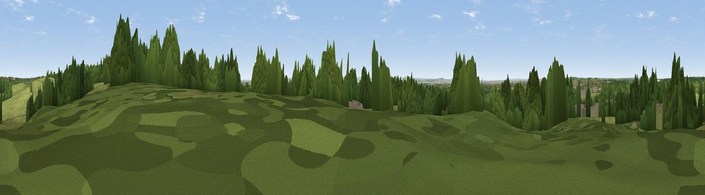

Viewpoint near Great Warley
#39909 in England · top 36% of its area beats it · near Great Warley · open accessWhere it is
The exact computed spot (TQ 57775 90375). Click the marker for map links.
Public access: this spot lies on mapped open-access land (CRoW Act 2000) — you may roam here on foot. Computed from Natural England's CRoW access layer and OpenStreetMap rights of way — not the legal definitive map. Always verify locally.
The view, rendered

A 360° render of this exact spot computed from the terrain model, tree cover and land cover — summer colours, afternoon light, calibrated against photographs of famous viewpoints. Real trees, hedges and buildings will differ in detail.
The panorama
Grey silhouette: terrain skyline in each direction (720 bearings, Earth curvature and refraction included). Dashed green: skyline with trees (+15 m) and buildings (+8 m) as obstacles. Blue strip: how far the ground is visible on each bearing.
Where the view opens
Wedge length = distance to the farthest visible ground on that bearing (vegetation-aware). Rings at 10, 25 and 50 km.
What fills the view
42% grassland · 40% woodland · 11% built-up · 7% cropland
Angular shares of the visible panorama (visual magnitude), not map area. Landscape diversity 0.51 (0–1 Shannon).
Key numbers
More beautiful places nearby
The staircase of upgrades: each row has a higher view potential than everything closer. Driving times are estimates from straight-line distance, calibrated against real road routing — check an actual route before setting out.
| Place | Direction | Drive | Score |
|---|---|---|---|
| Viewpoint near Great Warley | SW · 1 km | ~3 min | 40.0 |
| Jury Hill | ESE · 4 km | ~10 min | 48.5 |
| Viewpoint near Horndon On The Hill | ESE · 11 km | ~20 min | 51.8 |
| Viewpoint near Vange | ESE · 14 km | ~26 min | 58.2 |
| Viewpoint near South Benfleet | ESE · 21 km | ~35 min | 59.8 |
| Viewpoint near Hadleigh | ESE · 23 km | ~37 min | 61.0 |
| Viewpoint near Birling | SSE · 29 km | ~46 min | 65.1 |
| Viewpoint near Shipbourne | S · 37 km | ~56 min | 66.2 |
51.59014, 0.27617 · source: screening · position refined by local search. Computed location — check access rights before visiting.